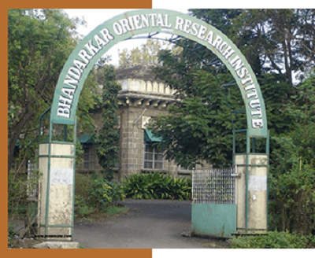
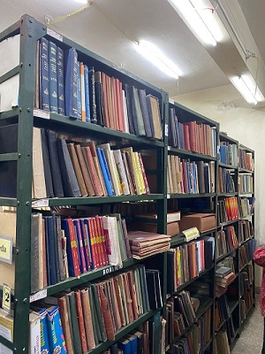

~WHAT IS IKS :
IKS (Indian Knowledge Systems) is an initiative that promotes India’s traditional knowledge, culture, and heritage by connecting it with modern education and research.
~ABOUT IKS STUDY TOUR :
The college organized a study tour under the IKS project to enhance students knowledge and practical understanding. The visit focused on three key areas.Students gained insights into the historical
and cultural importance of Manuscripts, the role of Libraries
in safeguarding knowledge, and the scientific methods adopted for Preservation. The tour provided a valuable opportunity to connect classroom
learning with real-world practices and emphasized the need to protect our cultural heritage.
~AIM/OBJECTIVE OF PROJECT :
1.To explore the historical significance of manuscripts as a source of knowledge.
2.To understand the role of libraries in the collection, organization, and dissemination of information.
3.To learn about traditional and modern preservation techniques used for maintaining manuscripts and rare books.
4.To create awareness about the importance of conserving cultural resources
for future generations.

